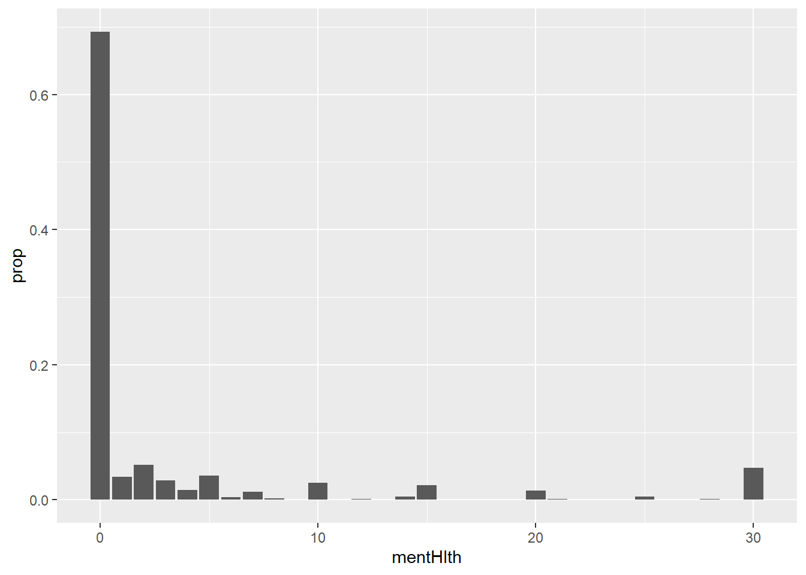
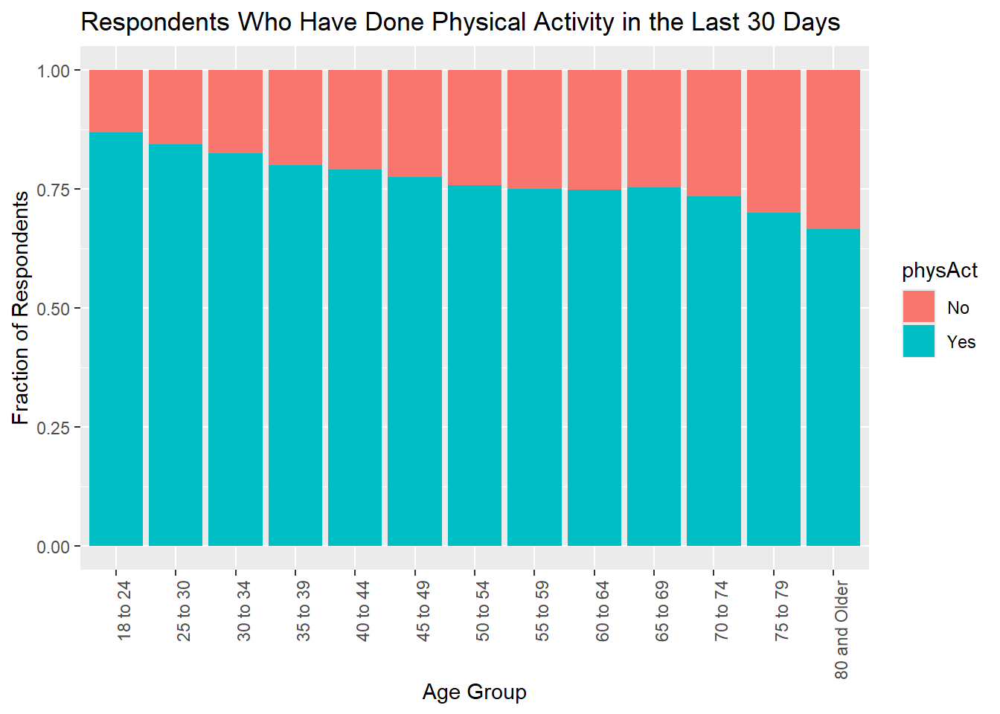
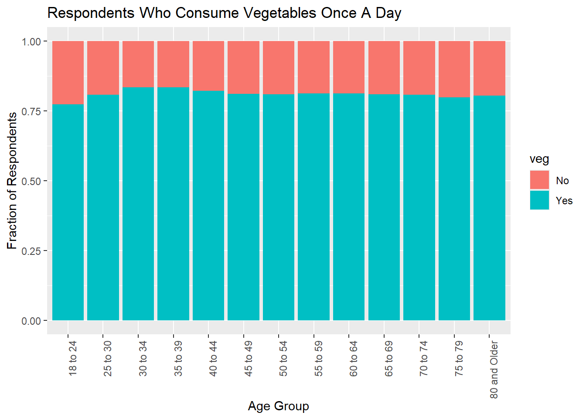
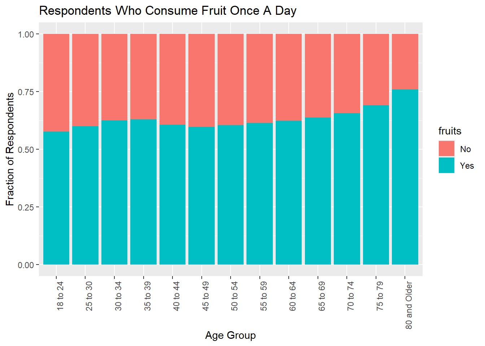
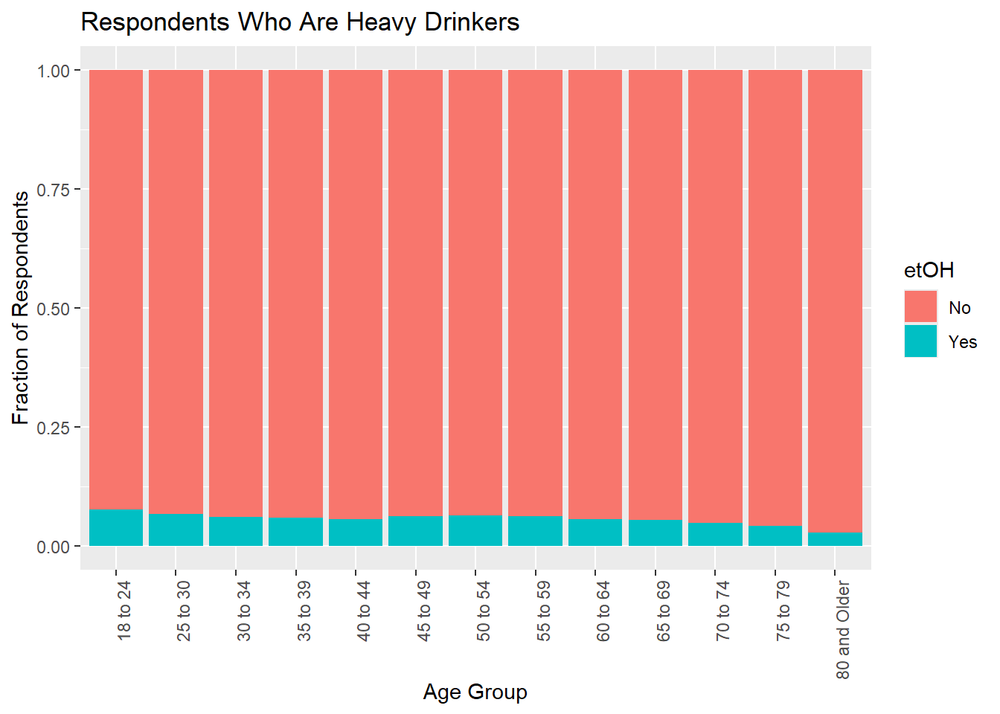
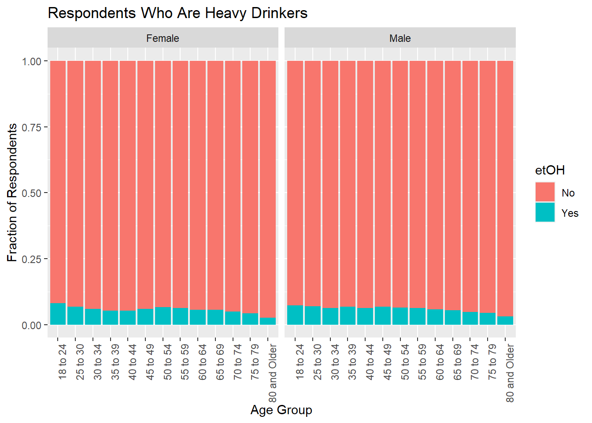
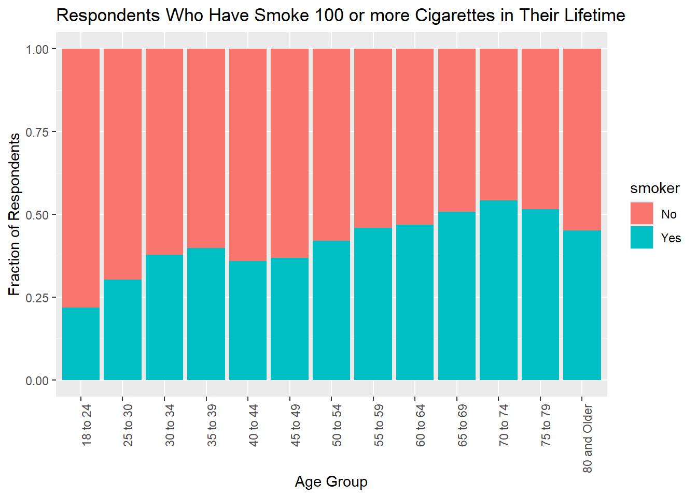
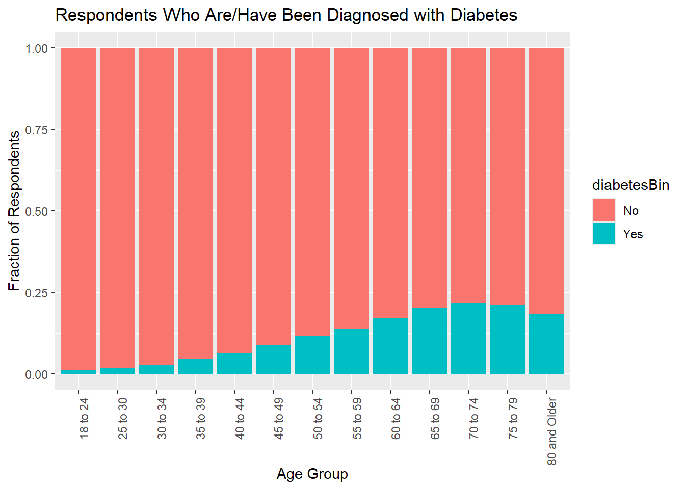

#load libraries used for EDA
library(tidyverse)EDA
Exploratory Data Analysis for the Diabetes Health Indicators Dataset:
Data were sourced from Kaggle.
Introduction:
The prevalence of Diabetes has increased from 200 million to 830 million cases worldwide from 1990 to 2022. In 2021 diabetes and diabetes related complications were implicated in over 2 million deaths. WHO
The Behavioral Risk Factor Surveillance System (BRFSS) is a survey that is conducted annually by the CDC and responses are collected from over 400,000 Americans. This survery has been conducted yearly since 1984. The dataset to be analyzed for this project (“diabetes_binary_health_indicators_BRFSS2015.csv”) contains 253,680 responses to the survey. There are three dependent variable levels, 0=no diabetes or only during pregnancy, 1=prediabetes, and 2= diabetes. There are two factor levels for the dependent variable; 0=no diabetes and 1=diabetes. There is class imbalance in the dataset and there are 21 feature variables. Diabetes Health Indicators Dataset
Most of the variables appear to be factor type variables (e.g., numbers are used to encode a class), and they will be explored and reformatted during the EDA below. In order to simplify the model fitting, I plan to explore “actionable” variables, or variables that the respondents can generally exert active control over in their lives (e.g.: Vegetable Consumption, Fruit Consumption, Smoking, Heavy Drinking, and Physical Activity), plus two intrinsic variables (Age and Sex). Each of these feature variables is a binary variable (Yes/No, Male/Female), except age is a factor type variable with 13 levels and will need to be coerced to factor and renamed. The dependent variable (Diabetes_binary) is also a binary variable that takes on “Yes” or “No”. A response of “Yes” in the context of this dataset means that the respondent has diabetes and a response of “No” means that the respondent does not have diabetes.
They purpose of this EDA is to understand the structure of the entire dataset, reformat the raw data as appropriate for downstream model fitting, and to see if there are any theories that we can formulate just by visualizing simple charts. The data will eventually be evaluated in two models (classification tree and random forest) by using 5-fold cross validation. The overall goal of this will be to tune and select the better model for predicting whether or not a respondent is at risk of diabetes using the variable described above.
Data Import, Structure Evalution, and Reformatting:
The data were downloaded from the source and saved locally on my hard drive. They will be imported below, evaluated, and formatted for the downstream uses of visualization and modelling.
The first step is to load libraries necessary for data exploration:
Here we’ll read in the data using the readr::read_csv command
#read csv file
data <- read_csv("../diabetes_binary_health_indicators_BRFSS2015.csv")Is there any missing data?
#sum total number of rows where data is missing
colSums(is.na(data)) Diabetes_binary HighBP HighChol
0 0 0
CholCheck BMI Smoker
0 0 0
Stroke HeartDiseaseorAttack PhysActivity
0 0 0
Fruits Veggies HvyAlcoholConsump
0 0 0
AnyHealthcare NoDocbcCost GenHlth
0 0 0
MentHlth PhysHlth DiffWalk
0 0 0
Sex Age Education
0 0 0
Income
0 No missing data! This matches the description of the data on the source webpage.
Now that the data are in the R global environment, it will be useful to understand the variables and the data types they were assigned upon import and this will help us to think about how best to reformat the data for future steps. We’ll use a few commands to do this: str() will give us the overall structure and can help to visualize the number of values for categorical variables and head() will help us to see the first 6 rows of the data to further understand information provided by str().
#use str() to check out variable data types and values.
str(data)spc_tbl_ [253,680 × 22] (S3: spec_tbl_df/tbl_df/tbl/data.frame)
$ Diabetes_binary : num [1:253680] 0 0 0 0 0 0 0 0 1 0 ...
$ HighBP : num [1:253680] 1 0 1 1 1 1 1 1 1 0 ...
$ HighChol : num [1:253680] 1 0 1 0 1 1 0 1 1 0 ...
$ CholCheck : num [1:253680] 1 0 1 1 1 1 1 1 1 1 ...
$ BMI : num [1:253680] 40 25 28 27 24 25 30 25 30 24 ...
$ Smoker : num [1:253680] 1 1 0 0 0 1 1 1 1 0 ...
$ Stroke : num [1:253680] 0 0 0 0 0 0 0 0 0 0 ...
$ HeartDiseaseorAttack: num [1:253680] 0 0 0 0 0 0 0 0 1 0 ...
$ PhysActivity : num [1:253680] 0 1 0 1 1 1 0 1 0 0 ...
$ Fruits : num [1:253680] 0 0 1 1 1 1 0 0 1 0 ...
$ Veggies : num [1:253680] 1 0 0 1 1 1 0 1 1 1 ...
$ HvyAlcoholConsump : num [1:253680] 0 0 0 0 0 0 0 0 0 0 ...
$ AnyHealthcare : num [1:253680] 1 0 1 1 1 1 1 1 1 1 ...
$ NoDocbcCost : num [1:253680] 0 1 1 0 0 0 0 0 0 0 ...
$ GenHlth : num [1:253680] 5 3 5 2 2 2 3 3 5 2 ...
$ MentHlth : num [1:253680] 18 0 30 0 3 0 0 0 30 0 ...
$ PhysHlth : num [1:253680] 15 0 30 0 0 2 14 0 30 0 ...
$ DiffWalk : num [1:253680] 1 0 1 0 0 0 0 1 1 0 ...
$ Sex : num [1:253680] 0 0 0 0 0 1 0 0 0 1 ...
$ Age : num [1:253680] 9 7 9 11 11 10 9 11 9 8 ...
$ Education : num [1:253680] 4 6 4 3 5 6 6 4 5 4 ...
$ Income : num [1:253680] 3 1 8 6 4 8 7 4 1 3 ...
- attr(*, "spec")=
.. cols(
.. Diabetes_binary = col_double(),
.. HighBP = col_double(),
.. HighChol = col_double(),
.. CholCheck = col_double(),
.. BMI = col_double(),
.. Smoker = col_double(),
.. Stroke = col_double(),
.. HeartDiseaseorAttack = col_double(),
.. PhysActivity = col_double(),
.. Fruits = col_double(),
.. Veggies = col_double(),
.. HvyAlcoholConsump = col_double(),
.. AnyHealthcare = col_double(),
.. NoDocbcCost = col_double(),
.. GenHlth = col_double(),
.. MentHlth = col_double(),
.. PhysHlth = col_double(),
.. DiffWalk = col_double(),
.. Sex = col_double(),
.. Age = col_double(),
.. Education = col_double(),
.. Income = col_double()
.. )
- attr(*, "problems")=<externalptr> All of the variables are numeric. Let’s see what the actual data look like.
#check out first 6 rows of data
head(data)# A tibble: 6 × 22
Diabetes_binary HighBP HighChol CholCheck BMI Smoker Stroke
<dbl> <dbl> <dbl> <dbl> <dbl> <dbl> <dbl>
1 0 1 1 1 40 1 0
2 0 0 0 0 25 1 0
3 0 1 1 1 28 0 0
4 0 1 0 1 27 0 0
5 0 1 1 1 24 0 0
6 0 1 1 1 25 1 0
# ℹ 15 more variables: HeartDiseaseorAttack <dbl>, PhysActivity <dbl>,
# Fruits <dbl>, Veggies <dbl>, HvyAlcoholConsump <dbl>, AnyHealthcare <dbl>,
# NoDocbcCost <dbl>, GenHlth <dbl>, MentHlth <dbl>, PhysHlth <dbl>,
# DiffWalk <dbl>, Sex <dbl>, Age <dbl>, Education <dbl>, Income <dbl>We know from the description of the dataset that Diabetes_binary is is a factor type variable, with 0, 1, and 2 representing different diabetes “diagnoses”. We’ll use the descriptions provided with the data to format the dataset.
I’d like to understand what values are available for the factor type variables in this dataset so that I can set values appropriate, or verify that they were set by R appropriately. The description of the Diabetes_binary variable appears to have three levels, but the chart immediately under it shows a binary response. Diabetes_binary.
#create count table of levels
table(data$Diabetes_binary)
0 1
218334 35346 Ok, the description on the webpage appears to be mis-specified. This does appear to be a binary response with two levels (0,1)
Let’s change the factor type variables to factors in the dataset. We’ll create a list of the variables that we want to change to factors, then we’ll change the names of all the variables, then we’ll apply the factor list through the factor() function to selectively change the variables to
#create list of variables to change to factor
factors<-c("diabetesBin", "highBP", "highChol", "cholCheck", "smoker", "stroke", "heartProb", "physAct", "fruits", "veg", "etOH", "hlthCare", "noDoc", "genHlth", "diffWalk", "sex", "age", "edu", "income")
#create list of variables to change to integers
integers<-c("bmi", "mentHlth", "physHlth")
#use rename() to rename all variables for consistency and mutate() to change each list to appropriate data type
data1 <- data |>
rename("diabetesBin" = "Diabetes_binary",
"highBP" = "HighBP",
"highChol" = "HighChol",
"cholCheck" = "CholCheck",
"bmi" = "BMI",
"smoker" = "Smoker",
"stroke" = "Stroke",
"heartProb" = "HeartDiseaseorAttack",
"physAct" = "PhysActivity",
"fruits" = "Fruits",
"veg" = "Veggies",
"etOH" = "HvyAlcoholConsump",
"hlthCare" ="AnyHealthcare",
"noDoc" = "NoDocbcCost",
"genHlth" = "GenHlth",
"mentHlth" = "MentHlth",
"physHlth" = "PhysHlth",
"diffWalk" = "DiffWalk",
"sex" = "Sex",
"age" = "Age",
"edu" = "Education",
"income" = "Income"
) |>
mutate_at(factors, factor) |>
mutate_at(integers, as.integer)We’ll still should redefine some of the factors to have a value that helps us understand the dataset, but let’s check everything out first to make sure it makes sense.
#show data structure after coercion
str(data1)tibble [253,680 × 22] (S3: tbl_df/tbl/data.frame)
$ diabetesBin: Factor w/ 2 levels "0","1": 1 1 1 1 1 1 1 1 2 1 ...
$ highBP : Factor w/ 2 levels "0","1": 2 1 2 2 2 2 2 2 2 1 ...
$ highChol : Factor w/ 2 levels "0","1": 2 1 2 1 2 2 1 2 2 1 ...
$ cholCheck : Factor w/ 2 levels "0","1": 2 1 2 2 2 2 2 2 2 2 ...
$ bmi : int [1:253680] 40 25 28 27 24 25 30 25 30 24 ...
$ smoker : Factor w/ 2 levels "0","1": 2 2 1 1 1 2 2 2 2 1 ...
$ stroke : Factor w/ 2 levels "0","1": 1 1 1 1 1 1 1 1 1 1 ...
$ heartProb : Factor w/ 2 levels "0","1": 1 1 1 1 1 1 1 1 2 1 ...
$ physAct : Factor w/ 2 levels "0","1": 1 2 1 2 2 2 1 2 1 1 ...
$ fruits : Factor w/ 2 levels "0","1": 1 1 2 2 2 2 1 1 2 1 ...
$ veg : Factor w/ 2 levels "0","1": 2 1 1 2 2 2 1 2 2 2 ...
$ etOH : Factor w/ 2 levels "0","1": 1 1 1 1 1 1 1 1 1 1 ...
$ hlthCare : Factor w/ 2 levels "0","1": 2 1 2 2 2 2 2 2 2 2 ...
$ noDoc : Factor w/ 2 levels "0","1": 1 2 2 1 1 1 1 1 1 1 ...
$ genHlth : Factor w/ 5 levels "1","2","3","4",..: 5 3 5 2 2 2 3 3 5 2 ...
$ mentHlth : int [1:253680] 18 0 30 0 3 0 0 0 30 0 ...
$ physHlth : int [1:253680] 15 0 30 0 0 2 14 0 30 0 ...
$ diffWalk : Factor w/ 2 levels "0","1": 2 1 2 1 1 1 1 2 2 1 ...
$ sex : Factor w/ 2 levels "0","1": 1 1 1 1 1 2 1 1 1 2 ...
$ age : Factor w/ 13 levels "1","2","3","4",..: 9 7 9 11 11 10 9 11 9 8 ...
$ edu : Factor w/ 6 levels "1","2","3","4",..: 4 6 4 3 5 6 6 4 5 4 ...
$ income : Factor w/ 8 levels "1","2","3","4",..: 3 1 8 6 4 8 7 4 1 3 ...Ok, everything is making sense! Now we need to give some useful levels to the factors. We’ll use fct_recode for this purpose. We will rely on the dataset description to assign numeric levels to character levels that help us understand the data a little more clearly.
#create list of yes/no factors to be coded where 0=no, 1=yes
yesNo <- c("diabetesBin", "highBP", "highChol", "cholCheck", "smoker", "stroke", "heartProb", "physAct", "fruits", "veg", "etOH", "hlthCare", "noDoc", "diffWalk")
#mutate_at the list yesNo and equate 0 to no and 1 to yes.
data2 <- data1 |>
mutate_at(.vars = yesNo,
.funs = fct_recode,
"Yes" = "1",
"No" = "0")Let’s check quickly to see if that worked as expected…
#show data structure after factor recoding
str(data2)tibble [253,680 × 22] (S3: tbl_df/tbl/data.frame)
$ diabetesBin: Factor w/ 2 levels "No","Yes": 1 1 1 1 1 1 1 1 2 1 ...
$ highBP : Factor w/ 2 levels "No","Yes": 2 1 2 2 2 2 2 2 2 1 ...
$ highChol : Factor w/ 2 levels "No","Yes": 2 1 2 1 2 2 1 2 2 1 ...
$ cholCheck : Factor w/ 2 levels "No","Yes": 2 1 2 2 2 2 2 2 2 2 ...
$ bmi : int [1:253680] 40 25 28 27 24 25 30 25 30 24 ...
$ smoker : Factor w/ 2 levels "No","Yes": 2 2 1 1 1 2 2 2 2 1 ...
$ stroke : Factor w/ 2 levels "No","Yes": 1 1 1 1 1 1 1 1 1 1 ...
$ heartProb : Factor w/ 2 levels "No","Yes": 1 1 1 1 1 1 1 1 2 1 ...
$ physAct : Factor w/ 2 levels "No","Yes": 1 2 1 2 2 2 1 2 1 1 ...
$ fruits : Factor w/ 2 levels "No","Yes": 1 1 2 2 2 2 1 1 2 1 ...
$ veg : Factor w/ 2 levels "No","Yes": 2 1 1 2 2 2 1 2 2 2 ...
$ etOH : Factor w/ 2 levels "No","Yes": 1 1 1 1 1 1 1 1 1 1 ...
$ hlthCare : Factor w/ 2 levels "No","Yes": 2 1 2 2 2 2 2 2 2 2 ...
$ noDoc : Factor w/ 2 levels "No","Yes": 1 2 2 1 1 1 1 1 1 1 ...
$ genHlth : Factor w/ 5 levels "1","2","3","4",..: 5 3 5 2 2 2 3 3 5 2 ...
$ mentHlth : int [1:253680] 18 0 30 0 3 0 0 0 30 0 ...
$ physHlth : int [1:253680] 15 0 30 0 0 2 14 0 30 0 ...
$ diffWalk : Factor w/ 2 levels "No","Yes": 2 1 2 1 1 1 1 2 2 1 ...
$ sex : Factor w/ 2 levels "0","1": 1 1 1 1 1 2 1 1 1 2 ...
$ age : Factor w/ 13 levels "1","2","3","4",..: 9 7 9 11 11 10 9 11 9 8 ...
$ edu : Factor w/ 6 levels "1","2","3","4",..: 4 6 4 3 5 6 6 4 5 4 ...
$ income : Factor w/ 8 levels "1","2","3","4",..: 3 1 8 6 4 8 7 4 1 3 ...That appears as if we now have a Yes/No for each binary variable from our yesNo list above. Now, let’s use fct_recode on the factors that are not binary and need a little more attention.
data3 <- data2 |>
#define levels for genHlth
mutate(genHlth = fct_recode(genHlth,
"Excellent" = "1",
"Very Good" = "2",
"Good" = "3",
"Fair" = "4",
"Poor" = "5"),
#define levels for age
age = fct_recode(age,
"18 to 24" = "1",
"25 to 30" = "2",
"30 to 34" = "3",
"35 to 39" = "4",
"40 to 44" = "5",
"45 to 49" = "6",
"50 to 54" = "7",
"55 to 59" = "8",
"60 to 64" = "9",
"65 to 69" = "10",
"70 to 74" = "11",
"75 to 79" = "12",
"80 and Older" = "13"),
#define levels for edu
edu = fct_recode(edu,
"No School/Only Kindergarten" = "1",
"Grades 1-8" = "2",
"Grades 9-11" = "3",
"Grade 12/GED" = "4",
"College Years 1-3" = "5",
"College Years >=4" = "6"),
#define levels for income
income =fct_recode(income,
"Less than $10K" = "1",
"$10K to less than $15K" = "2",
"$15K to less than $20K" = "3",
"$20K to less than $25K" = "4",
"$25K to less than $35K" = "5",
"$35K to less than $50K" = "6",
"$50K to less than $75K" = "7",
"Greater than $75K" = "8"),
#define levels for sex
sex = fct_recode(sex,
"Female" = "0",
"Male" = "1")
)Ok, that should be it for formatting, recoding and general data structure updates. Let’s check it out before moving on:
#check out data structure after definitions applied to factor levels
str(data3)tibble [253,680 × 22] (S3: tbl_df/tbl/data.frame)
$ diabetesBin: Factor w/ 2 levels "No","Yes": 1 1 1 1 1 1 1 1 2 1 ...
$ highBP : Factor w/ 2 levels "No","Yes": 2 1 2 2 2 2 2 2 2 1 ...
$ highChol : Factor w/ 2 levels "No","Yes": 2 1 2 1 2 2 1 2 2 1 ...
$ cholCheck : Factor w/ 2 levels "No","Yes": 2 1 2 2 2 2 2 2 2 2 ...
$ bmi : int [1:253680] 40 25 28 27 24 25 30 25 30 24 ...
$ smoker : Factor w/ 2 levels "No","Yes": 2 2 1 1 1 2 2 2 2 1 ...
$ stroke : Factor w/ 2 levels "No","Yes": 1 1 1 1 1 1 1 1 1 1 ...
$ heartProb : Factor w/ 2 levels "No","Yes": 1 1 1 1 1 1 1 1 2 1 ...
$ physAct : Factor w/ 2 levels "No","Yes": 1 2 1 2 2 2 1 2 1 1 ...
$ fruits : Factor w/ 2 levels "No","Yes": 1 1 2 2 2 2 1 1 2 1 ...
$ veg : Factor w/ 2 levels "No","Yes": 2 1 1 2 2 2 1 2 2 2 ...
$ etOH : Factor w/ 2 levels "No","Yes": 1 1 1 1 1 1 1 1 1 1 ...
$ hlthCare : Factor w/ 2 levels "No","Yes": 2 1 2 2 2 2 2 2 2 2 ...
$ noDoc : Factor w/ 2 levels "No","Yes": 1 2 2 1 1 1 1 1 1 1 ...
$ genHlth : Factor w/ 5 levels "Excellent","Very Good",..: 5 3 5 2 2 2 3 3 5 2 ...
$ mentHlth : int [1:253680] 18 0 30 0 3 0 0 0 30 0 ...
$ physHlth : int [1:253680] 15 0 30 0 0 2 14 0 30 0 ...
$ diffWalk : Factor w/ 2 levels "No","Yes": 2 1 2 1 1 1 1 2 2 1 ...
$ sex : Factor w/ 2 levels "Female","Male": 1 1 1 1 1 2 1 1 1 2 ...
$ age : Factor w/ 13 levels "18 to 24","25 to 30",..: 9 7 9 11 11 10 9 11 9 8 ...
$ edu : Factor w/ 6 levels "No School/Only Kindergarten",..: 4 6 4 3 5 6 6 4 5 4 ...
$ income : Factor w/ 8 levels "Less than $10K",..: 3 1 8 6 4 8 7 4 1 3 ...Now let’s take a look at the dataset itself:
#show first 6 rows of data
head(data3)# A tibble: 6 × 22
diabetesBin highBP highChol cholCheck bmi smoker stroke heartProb physAct
<fct> <fct> <fct> <fct> <int> <fct> <fct> <fct> <fct>
1 No Yes Yes Yes 40 Yes No No No
2 No No No No 25 Yes No No Yes
3 No Yes Yes Yes 28 No No No No
4 No Yes No Yes 27 No No No Yes
5 No Yes Yes Yes 24 No No No Yes
6 No Yes Yes Yes 25 Yes No No Yes
# ℹ 13 more variables: fruits <fct>, veg <fct>, etOH <fct>, hlthCare <fct>,
# noDoc <fct>, genHlth <fct>, mentHlth <int>, physHlth <int>, diffWalk <fct>,
# sex <fct>, age <fct>, edu <fct>, income <fct>Ok, this looks as I expected. The binary factors are Yes or No, the integer variables are integers, and more complex factors have the character string descriptors attached to each level. Let’s move on to visualization.
Visualization with Plots
Firstly, I had asked a question on the class discussion board on the modeling of the numeric values using factors or numerical values. From the responses in the class discussion board and in my own personal readings, it seems that these variables (mentHlth and physHlth) should be modeled as numeric inputs (if they were to be modeled).
#create bar chart for mentHlth
mentHlthChart<- ggplot(data3, aes(x=mentHlth),) +
geom_bar(aes(y = after_stat(prop), group = 1))
mentHlthChart
Next, we’ll plot the physHlth variable
#create bar chart for physHlth
physHlthChart<- ggplot(data3, aes(x=physHlth),) +
geom_bar(aes(y = after_stat(prop), group = 1))
physHlthChart
These are both interesting plots. For both variables, there are major peaks at 0 and 30. In addition, it almost appears as if there are small, local peaks at multiples of 5 which leads me to think that these scales may not be as useful as desired and respondents may be providing “easy” number estimates. We won’t explore these variables further in this analysis since these do not fit with what I’d like to explore…variables that can be generally be directly controlled by the individual. Physical health and Mental Health may or may not be under the control of the person.
How is age associated with directly actionable variables? Let’s start with physAct. Do people do less physical activity as they get older?
#create bar chart that shows percentage of respondents who have performed phycical activity in the last 30 days vs. those who have not at each age level.
actAge <- ggplot(data3, aes(age, fill=physAct)) +
geom_bar(position="fill") +
theme(axis.text.x = element_text(angle = 90, hjust = 1)) +
labs(x = "Age Group",
y = "Fraction of Respondents",
title = "Respondents Who Have Done Physical Activity in the Last 30 Days")
actAge
It does appear as if the overall activity level decreases as the respondents get older. Let’s explore the association of Age with other actionable variables. Do respondents generally “get healthier” as they get older?
#create bar chart that shows percentage of respondents who consume vegetables at least once a day vs. those who have not at each age level.
vegAge <- ggplot(data3, aes(age, fill=veg)) +
geom_bar(position="fill") +
theme(axis.text.x = element_text(angle = 90, hjust = 1)) +
labs(x = "Age Group",
y = "Fraction of Respondents",
title = "Respondents Who Consume Vegetables Once A Day")
vegAge
The changes in vegetable consumption by age group appear small. Next, let’s look at fruit consumption by age group.
#create bar chart that shows percentage of respondents who consume fruits at least once a day vs. those who have not at each age level.
fruitAge <- ggplot(data3, aes(age, fill=fruits)) +
geom_bar(position="fill") +
theme(axis.text.x = element_text(angle = 90, hjust = 1)) +
labs(x = "Age Group",
y = "Fraction of Respondents",
title = "Respondents Who Consume Fruit Once A Day")
fruitAge
It looks like fruit consumption has a slight positive trend as age increases. Now let’s look at some things that are deemed “unhealthy”. Does excessive drinking decrease with age?
#create bar chart that shows percentage of respondents who are heavy drinkers vs. those who are not at each age level.
etOHAge <- ggplot(data3, aes(age, fill=etOH)) +
geom_bar(position="fill") +
theme(axis.text.x = element_text(angle = 90, hjust = 1)) +
labs(x = "Age Group",
y = "Fraction of Respondents",
title = "Respondents Who Are Heavy Drinkers")
etOHAge
This is difficult to visualize any trends, as any changes appear small. There may be evidence that older respondents drink less overall. Maybe we can see a diffence if we seperate by sex.
#create bar chart that shows percentage of respondents who are heavy alcohol consumers vs. those who are not at each age level and by sex.
etOHAgeSex <- ggplot(data3, aes(age, fill=etOH)) +
geom_bar(position="fill") +
theme(axis.text.x = element_text(angle = 90, hjust = 1)) +
labs(x = "Age Group",
y = "Fraction of Respondents",
title = "Respondents Who Are Heavy Drinkers") +
facet_wrap(vars(sex))
etOHAgeSex
There does not appear to be much difference between the sexes.
Let’s look at the smoking response. Does the act of smoking at least 100 cigarettes in your lifetime increase with age?
#create bar chart that shows percentage of respondents who have smoke at least 100 cigarettes vs. those who have not at each age level.
smokeAge <- ggplot(data3, aes(age, fill=smoker)) +
geom_bar(position="fill") +
theme(axis.text.x = element_text(angle = 90, hjust = 1)) +
labs(x = "Age Group",
y = "Fraction of Respondents",
title = "Respondents Who Have Smoke 100 or more Cigarettes in Their Lifetime")
smokeAge
It looks like older age groups have smoked more, and just under half of all respondents have smoke at least 100 cigarettes in their lifetimes.
Lastly, is diabetic diagnosis relative to age?
#create bar chart that shows percentage of respondents who have been diagnosed with diabetes vs. those who have not at each age level.
diagAge <- ggplot(data3, aes(age, fill=diabetesBin)) +
geom_bar(position="fill") +
theme(axis.text.x = element_text(angle = 90, hjust = 1)) +
labs(x = "Age Group",
y = "Fraction of Respondents",
title = "Respondents Who Are/Have Been Diagnosed with Diabetes")
diagAge
It appears that diabetes increases with age group. The previous charts have shown various trajectories for “healthy” habits relative to age. For instance, the prevalence of physical activity outside of work decreases with age. The changes in consumption of fruits and vegetables is hard to see if there is any meaningful change from these visuals. Heavy drinking decreases with age and smoking increases with age group. Hopefully our numeric summaries and modeling can create more rigorous and convincing interpretations of these predictors on risk of diabetes.
Note
The increase in smoking does not mean that people smoke more as they age. It could mean that or it mean that society’s views on smoking have changed and smokers are moving towards aging out of the population.
Now, let’s explore some numerical summaries.
How many of the respondents have diabetes?
#create contingency table of diabetes diagnoses
table(data3$diabetesBin)
No Yes
218334 35346 How many males and how many females have/have had diabetes?
#create 2 way contingency table
table(data3$diabetesBin, data3$sex)
Female Male
No 123563 94771
Yes 18411 16935Let’s calculate a percentage of respondents who have diabetes.
#this code will count 'yes' responses in diabetesBin and divide by total rows (there is no missing data) to generate a percentage of respondents that responded 'yes" to having diabetes.
pos <- data3 |>
filter((diabetesBin %in% "Yes")) |>
nrow()
diabetesPct <- pos/nrow(data3)*100
#diabetesPctApproximately 14% of respondents overall have or have had diabetes in some form.
Is there a diabetes risk associated with sex? We saw above the numbers of males and females with and without diabetes. Let’s calculate proporation of diabetics for each sex.
#calculate # of males with diabetes
posMale <- data3 |>
filter((diabetesBin %in% "Yes" & sex %in% "Male")) |>
nrow()
#calculate total number of males
nMale <- data3 |>
filter(sex %in% "Male") |>
nrow()
#calculate percentage of males who have diabetes
posMalePct <- posMale/nMale*100
#posMalePct
#calculate # of females with diabetes
posFem <- data3 |>
filter((diabetesBin %in% "Yes" & sex %in% "Female")) |>
nrow()
#calculate total number of females
nFem <- data3 |>
filter(sex %in% "Female") |>
nrow()
#calculate percentage of females who have diabetes and create tibble for display
posFemPct <- posFem/nFem*100
#posFemPct
#create tibble for data display
posPcts <- as_tibble(cbind(posMalePct, posFemPct))
names(posPcts) <- c("% Males with Diabetes", "% Females with Diabetes")
posPcts# A tibble: 1 × 2
`% Males with Diabetes` `% Females with Diabetes`
<dbl> <dbl>
1 15.2 13.0Approximately 15% of Male respondents have/have had diabetes and approximately 13% of Female respondents have/have had diabetes. It seems that males may be slightly more at risk of developing the condition.
Let’s see if there are any other simple relationships that we can evaluate with regard to the “actionable” variables.
Below, we’ll check out if physical activity helps derisk diabetes.
#calculate number of people without diabetes who have also been active in the past 30 days.
negAct <- data3 |>
filter((diabetesBin %in% "No" & physAct %in% "Yes")) |>
nrow()
#calculate total number of respondents who were active in the last 30 days.
nAct <- data3 |>
filter(physAct %in% "Yes") |>
nrow()
#calculate percentage of active respondents who do not have diabetes
negActPct <- negAct/nAct*100
#negActPct88% of respondents who have been active in the past 30 days do not have and have not had diabetes. This doesn’t really mean much by itself. We’ll see further down how this compares to non-active responders.
We can also generate similar stats for other actionable factor variables using the prop.table() function. Let’s check out some diet relationships with diabetes.
#generate contingency table and use prop.table to show percentages and addmargins() to get marginal percentages
vegTable <- table(data3$diabetesBin, data3$veg)
vegTablePct<- addmargins(prop.table(vegTable))
vegTablePct
No Yes Sum
No 0.1546397 0.7060273 0.8606670
Yes 0.0339404 0.1053926 0.1393330
Sum 0.1885801 0.8114199 1.0000000This is a little difficult to interpret because both variable levels are “YES” and “NO”. However, the behavior of the table() function puts the first argument on the y-axis and the second argument on the x-axis. It is also difficult to make sense any these percentages, since they are percentages of the total responses. We can generate ratios for combinations of values from each variable.
#proportion of healthy choice associated with diabetes, and proportion of unhealthy choice associated with diabetes.
posVegProp <- vegTablePct[2,2]/vegTablePct[3,2]
#posVegProp
#proportion of respondents who choose unhealthy activities who were diagnosed with diabetes
posNoVegProp <- vegTablePct[2,1]/vegTablePct[3,1]
#posNoVegProp
#create tibble of ratios and rename columns for display.
vegPropTab <- as_tibble(cbind(posVegProp, posNoVegProp))
names(vegPropTab) <- c("Vegetable Eaters With Diabetes", "Non-Vegetable Eaters With Diabetes")
#vegPropTabThe proportion of people who ate vegetables and developed diabetes is lower than the proportion of people who did not eat vegetables and developed diabetes. Let’s evaluate this same ratio for fruit consumption.
#generate contingency table and use addmargins() to get marginal percentages
fruitTable <- table(data3$diabetesBin, data3$fruits)
fruitTablePct<- addmargins(prop.table(fruitTable))
fruitTablePct
No Yes Sum
No 0.30798250 0.55268448 0.86066698
Yes 0.05776175 0.08157127 0.13933302
Sum 0.36574424 0.63425576 1.00000000#proportion of healthy choice associated with diabetes, and proportion of unhealthy choice associated with diabetes.
posFruitProp <- fruitTablePct[2,2]/fruitTablePct[3,2]
#posFruitProp
#proportion of respondents who choose unhealthy activities who were diagnosed with diabetes
posNoFruitProp <- fruitTablePct[2,1]/fruitTablePct[3,1]
#posNoFruitProp
#create tibble of ratios and rename columns for display.
fruitPropTab <- as_tibble(cbind(posFruitProp, posNoFruitProp))
names(fruitPropTab) <- c("Fruit Eaters With Diabetes", "Non-Fruit Eaters With Diabetes")
fruitPropTab# A tibble: 1 × 2
`Fruit Eaters With Diabetes` `Non-Fruit Eaters With Diabetes`
<dbl> <dbl>
1 0.129 0.158The proportion of people who ate fruit and developed diabetes is lower than the proportion of people who did not eat vegetables and developed diabetes.
Let’s move on to the activities that are commonly labeled as “risky,” smoking and drinking and calculate similar proportions.
#generate contingency table and use addmargins() to get marginal percentages
smokeTable <- table(data3$diabetesBin, data3$smoker)
smokeTablePct<- addmargins(prop.table(smokeTable))
smokeTablePct
No Yes Sum
No 0.48970356 0.37096342 0.86066698
Yes 0.06712788 0.07220514 0.13933302
Sum 0.55683144 0.44316856 1.00000000#proportion of healthy lifestyle choice for diabetics and proportion of unhealthy choice for diabetics, switching logic to have same order of "good:bad".
posNoSmokeProp <- smokeTablePct[2,1]/smokeTablePct[3,1]
#posNoSmokeProp
#proportion of respondents who choose unhealthy activities who were diagnosed with diabetes
posSmokeProp <- smokeTablePct[2,2]/smokeTablePct[3,2]
#posSmokeProp
#create tibble of ratios and rename columns for display.
smokePropTab <- as_tibble(cbind(posNoSmokeProp, posSmokeProp))
names(smokePropTab) <- c("Non-smokers With Diabetes", "Smokers With Diabetes")
smokePropTab# A tibble: 1 × 2
`Non-smokers With Diabetes` `Smokers With Diabetes`
<dbl> <dbl>
1 0.121 0.163The proportion of people who did not smoke at least 100 cigarettes in their lifetime and developed diabetes is lower than the proportion of people who did smoke that many cigarettes and developed diabetes.
Now we’ll explore the choice of heavy alcohol consumption and its relationship to diabetes.
#generate contingency table and use addmargins() to get marginal percentages
etOHTable <- table(data3$diabetesBin, data3$etOH)
etOHTablePct<- addmargins(prop.table(etOHTable))
etOHTablePct
No Yes Sum
No 0.807749921 0.052917061 0.860666982
Yes 0.136053295 0.003279722 0.139333018
Sum 0.943803217 0.056196783 1.000000000#proportion of healthy lifestyle choice for diabetics and proportion of unhealthy choice for diabetics, switching logic to have same order of "good:bad".
posNoetOHProp <- etOHTablePct[2,1]/etOHTablePct[3,1]
#posNoSmokeProp
#proportion of respondents who choose unhealthy activities who were diagnosed with diabetes
posetOHProp <- etOHTablePct[2,2]/etOHTablePct[3,2]
#posetOHProp
#create tibble of ratios and rename columns for display.
etOHPropTab <- as_tibble(cbind(posNoetOHProp, posetOHProp))
names(etOHPropTab) <- c("Non-Bingers With Diabetes", "Bingers With Diabetes")
etOHPropTab# A tibble: 1 × 2
`Non-Bingers With Diabetes` `Bingers With Diabetes`
<dbl> <dbl>
1 0.144 0.0584Overall, the proportion of people who did not drink heavily (“binge”) is higher than the proportion of those who did binge and develop diabetes. I did not expect this.
We already calculated similar proportions above for physAct, but let’s do it here again in the same format as the other variables so that we can combine all the tables into a single table for ease of visualization.
#generate contingency table and use addmargins() to get marginal percentages
actTable <- table(data3$diabetesBin, data3$physAct)
actTablePct<- addmargins(prop.table(actTable))
actTablePct
No Yes Sum
No 0.19197808 0.66868890 0.86066698
Yes 0.05147824 0.08785478 0.13933302
Sum 0.24345632 0.75654368 1.00000000#proportion of healthy choice associated with diabetes, and proportion of unhealthy choice associated with diabetes..
posActProp <- actTablePct[2,2]/actTablePct[3,2]
#posActProp
#proportion of respondents who choose unhealthy activities who were diagnosed with diabetes
posNoActProp <- actTablePct[2,1]/actTablePct[3,1]
#posNoActProp
#create tibble of ratios and rename columns for display.
actPropTab <- as_tibble(cbind(posActProp, posNoActProp))
names(actPropTab) <- c("Active People With Diabetes", "Non-Active People With Diabetes")
actPropTab# A tibble: 1 × 2
`Active People With Diabetes` `Non-Active People With Diabetes`
<dbl> <dbl>
1 0.116 0.211Non-diabetics generally have a more active lifestyle than diabetics. The proportion of non-active people who develop diabetes is almost double the proportion of active people who develop the disease.
Let’s combine all of the variable proportions into a single tibble for ease of viewing the proportions side-by-side.
#rename all variables of the proportion tables to "healthy" or "unhealthy" so they can be bound into a single table. Use name index to rename all tables with the same syntax. Add a var$source identifier so that the source of each proportion is clear in final table.
veg <- vegPropTab |>
rename("healthy" = 1,
"unhealthy" = 2)
veg$source <- "veg"
fruit <- fruitPropTab |>
rename("healthy" = 1,
"unhealthy" = 2)
fruit$source <- "fruit"
smoke <- smokePropTab |>
rename("healthy" = 1,
"unhealthy" = 2)
smoke$source <- "smoker"
etOH <- etOHPropTab |>
rename("healthy" = 1,
"unhealthy" = 2)
etOH$source <- "drinker"
act <- actPropTab |>
rename("healthy" = 1,
"unhealthy" = 2)
act$source <- "active"
#combine all tables into singel table
propTable <- rbind(veg, fruit, smoke, etOH, act)
propTable# A tibble: 5 × 3
healthy unhealthy source
<dbl> <dbl> <chr>
1 0.130 0.180 veg
2 0.129 0.158 fruit
3 0.121 0.163 smoker
4 0.144 0.0584 drinker
5 0.116 0.211 active Discussion and Summary of EDA
This last tibble compares the proportions of respondents who have chosen healthy options who have developed diabetes against the proportions of respondents who have non chosen healthy options who have developed diabetes. On the surface, it seems that you could potentially pick the healthy choice in 4/5 categories and have a lower risk of developing diabetes. However, the alcohol variable is perplexing. Additionally, each of these proportions is calculated “in a vacuum” in the sense that they do not take other variables into consideration. The regression tree and random forest models should take care of that and help us to understand if any of the variables are more important than others when understanding risk of developing diabetes and how lifestyle choices can impact that outcome.